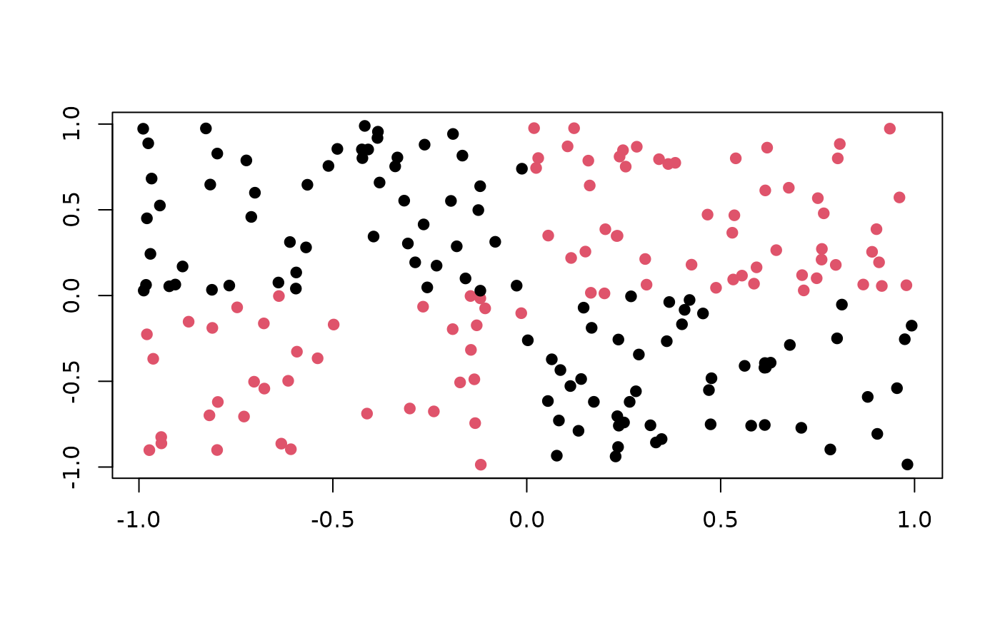

A TaskGenerator for the xor task in mlbench::mlbench.xor().
Dictionary
This TaskGenerator can be instantiated via the dictionary mlr_task_generators or with the associated sugar function tgen():
See also
as.data.table(mlr_task_generators)for a table of available TaskGenerators in the running session (depending on the loaded packages).Extension packages for additional task types:
mlr3proba for probabilistic supervised regression and survival analysis.
mlr3cluster for unsupervised clustering.
Other TaskGenerator:
TaskGenerator,
mlr_task_generators,
mlr_task_generators_2dnormals,
mlr_task_generators_cassini,
mlr_task_generators_circle,
mlr_task_generators_friedman1,
mlr_task_generators_moons,
mlr_task_generators_peak,
mlr_task_generators_simplex,
mlr_task_generators_smiley,
mlr_task_generators_spirals
Super class
mlr3::TaskGenerator -> TaskGeneratorXor
Examples
generator = tgen("xor")
plot(generator, n = 200)

task = generator$generate(200)
str(task$data())
#> Classes ‘data.table’ and 'data.frame': 200 obs. of 3 variables:
#> $ y : Factor w/ 2 levels "A","B": 2 2 2 1 2 2 2 2 1 2 ...
#> $ x1: num -0.5069 -0.7673 0.5126 -0.0956 -0.312 ...
#> $ x2: num -0.741 -0.885 0.681 0.386 -0.623 ...
#> - attr(*, ".internal.selfref")=<externalptr>